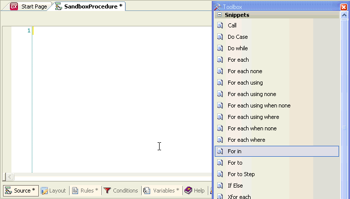

Code Snippets are reusable, task-oriented blocks of code which can be used for simple expansions of common programming structures. How to take advantage of Code Snippets?When opening the rules or procedural code section of one of the following objects Procedure\Report, Transaction, Web Panel, Work Panel you will notice the Toolbox window details a list of snippets with some generic GeneXus block of code such as:
One way to use them is to drag from the Snippets Toolbox the one you want and drop it on the source editor. Once dragged you willl notice the code expansion. If you check the associated snippet shorcut (with a mouse over it) you can also do exactly the same just by typying the shortcut in the source editor and pressing the TAB key; again the code expansion will take place ! Sample
 Take a look at the available ones so you can improve your productivity within the GeneXus IDE! Want to create your own ? Check this How To... See also
|
| Backlinks | ||
| HowTo: Creating a Code Snippet | IDE drag and drop support | List of code snippets shortcuts |